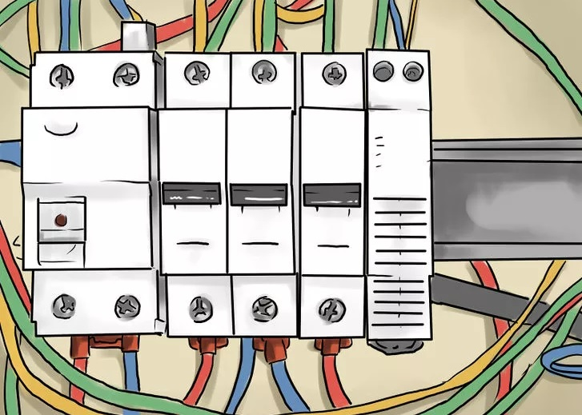

Install pipes for potable water, waste drains, and drain vents in walls. These can be capped off to trim out after the walls are finished, especially if the local codes require pressure testing before finishing may be done.
Install HVAC (air conditioning and heat) ductwork, air handlers, and refrigerant piping. Stub out your ductwork for return air and supply air registers. Insulate the ductwork if it is not pre-insulated, and seal all joints. Fasten ductwork as needed to prevent movement and ensure the your conduits are flush.
Rough-in electrical outlets. Most likely, there will be electrical outlets, light fixtures, and special wiring required for large appliances like water heaters, stoves, and air conditioning that will be necessary to do as soon as possible. Install the main electrical panel box, and any sub-panels your design requires, and install wiring from these to each device. Commonly, #12 Romex cable is used for ordinary lighting and outlet circuits, and nail-in electrical boxes are attached to the wall studs, with the front edge protruding to allow for the finished wall material to be flush.
Install insulation. Insulate walls where it is required. Depending on the climate, you will want to get location-specific guidelines for this area of work, as warmer climates will use substantially less insulation in the walls than warmer areas. Insulate the spaces between ceiling joists and walls.[10]
Walls are usually insulated with a minimum R-value of 13, and ceilings with a minimum of 19, but as much as 30, or even more for lowering fuel and utility usage.Install your ceilings. Gypsum wallboard made of drywall or sheetrock is a common material used for this application, but there are other products including acoustical ceiling tiles, beaded plywood paneling (to simulate planking), and even natural wood lumber that are commonly used for creating solid ceilings.
